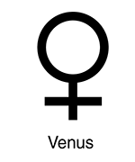

Венера
 Венера — третий по яркости объект на небе Земли после Солнца и Луны и достигает видимой звёздной величины в 4,6. Поскольку Венера ближе к Солнцу, чем Земля, она никогда не удаляется от Солнца более чем на 47,8° (для земного наблюдателя). Лучше всего она видна незадолго до восхода или через некоторое время после захода Солнца, что дало повод называть её также Вечерняя звезда или Утренняя звезда.
Венера — третий по яркости объект на небе Земли после Солнца и Луны и достигает видимой звёздной величины в 4,6. Поскольку Венера ближе к Солнцу, чем Земля, она никогда не удаляется от Солнца более чем на 47,8° (для земного наблюдателя). Лучше всего она видна незадолго до восхода или через некоторое время после захода Солнца, что дало повод называть её также Вечерняя звезда или Утренняя звезда.
Венера классифицируется как землеподобная планета, и иногда её называют «сестрой Земли», потому что обе планеты похожи размерами, силой тяжести и составом. Однако условия на двух планетах очень разнятся. Поверхность Венеры скрывают чрезвычайно густые облака серной кислоты с высокой отражательной способностью, что мешает увидеть её поверхность в видимом свете (но её атмосфера прозрачна для радиоволн, с помощью которых впоследствии и был исследован рельеф планеты). Споры о том, что находится под густой облачностью Венеры, продолжались до двадцатого столетия, пока многие из тайн Венеры не были приоткрыты планетологией. У Венеры самая плотная среди известных землеподобных планет атмосфера, состоящая главным образом из углекислого газа. Это объясняется тем, что на Венере нет круговорота углерода и жизни, которая могла бы перерабатывать его в биомассу.
 В глубокой древности Венера, как полагают, настолько разогрелась, что подобные земным океаны, которыми, как считается, она обладала, полностью испарились, оставив после себя пустынный пейзаж с множеством плитоподобных скал. Одна из гипотез полагает, что из-за слабости магнитного поля водяной пар (расщеплённый солнечным излучением на элементы) был унесён солнечным ветром в межпланетное пространство. Установлено, что атмосфера планеты и сейчас теряет водород и кислород в соотношении 2:1.
Атмосферное давление на поверхности Венеры в 92 раза больше, чем на Земле. Детальное картографирование поверхности Венеры проводилось в течение последних 22 лет, в частности проектом «Магеллан». Поверхность Венеры носит яркие признаки вулканической деятельности, а атмосфера содержит много серы. Некоторые эксперты полагают, что вулканическая деятельность на Венере продолжается и сейчас. Однако явных доказательств этому не было найдено, поскольку пока ни на одной из вулканических впадин — кальдер — не было замечено лавовых потоков. Удивительно низкое число ударных кратеров говорит в пользу того, что поверхность Венеры относительно молода: ей приблизительно 500 миллионов лет. Никаких свидетельств тектонического движения плит на Венере не обнаружено, возможно, потому что её литосфера из-за отсутствия воды слишком вязкая и, следовательно, недостаточно подвижна. Полагают также, что Венера постепенно теряет внутреннюю высокую температуру.